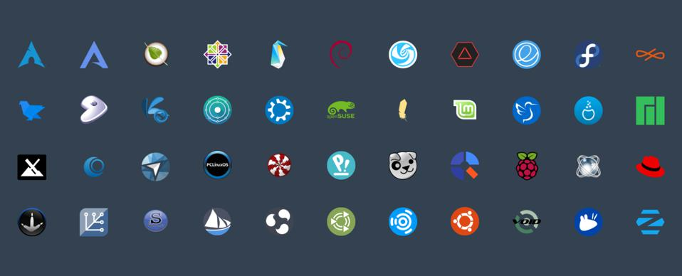
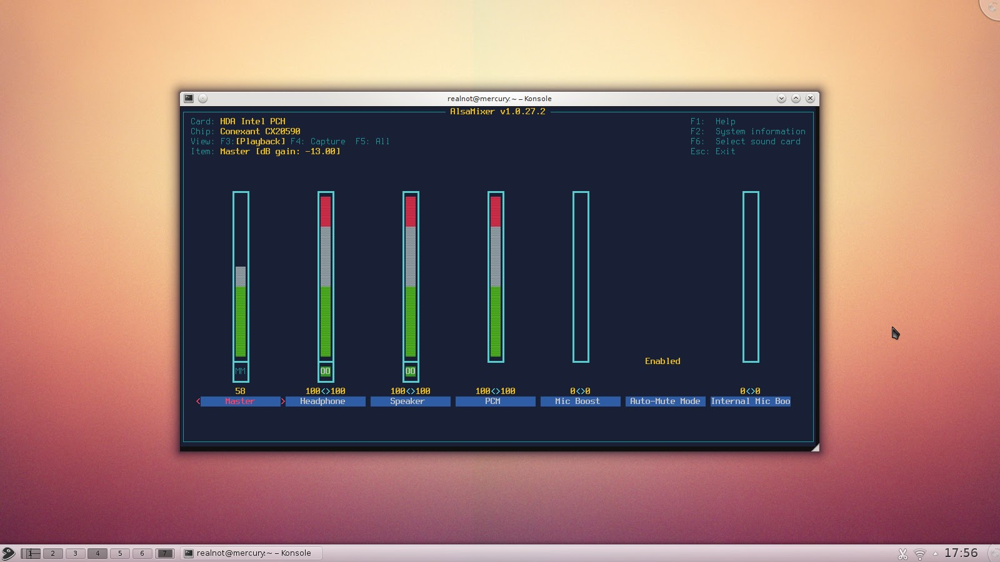
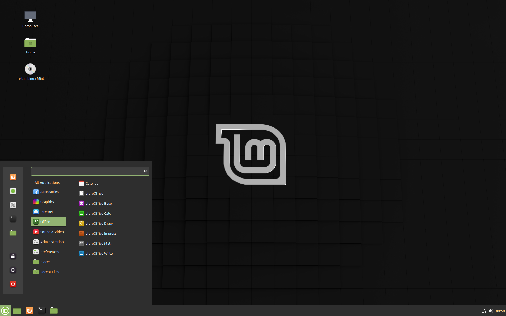

__Mundo Linux__
Curiosidades sobre o mundo Livre e Open Source, do qual o Linux faz parte. A cada dica aprenderemos novos conceitos do SO, assim como todos os arredores que o cobrem. A ideia é expandir seus horizontes e instigá-lo(a) a aderir alternativas de software livre, como o Linux, desprendendo-lhe das alternativas privadas e pagas. O conteúdo é totalmente gratuito e livre para compartilhamento e uso.
1 Origem e Definição
Linux não é um Sistema Operacional completo. É um Kernel livre baseado em padrão Unix, Minix, criado em 1991 por Linus Torvalds, finladês de 21 anos, desenvolvido em C, sendo considerado, inicialmente, um emulador de terminal, para uso em Unix, o que resultou no Kernel. Inicialmente cogitava-se o nome Freax (Free And X), com alusão ao Unix, sendo o nome "Linux" descartado egocentricamente por Linus. Graças ao dono do servidor descartar o termo "Freax", foi-se então escolhido novamente "Linux". Sua 1ª versão possuia 10.239 linhas de código, sendo em torno de 13% linhas em branco para melhor organização. Sua 1ª distribuição comercial foi a Yggdrasil Linux/GNU/X, lançada em 1992, no formato Live CD. Atualmente, cerca de 1% das linhas do Kernel é desenvolvida por Linus, contendo em torno de 22 milhões de linhas de código, recebendo cerca de 1300 alterações semanais. Além disso, todos os supercomputadores no mundo são Linux, e 70% da web é gerenciada por servidores Unix. Dessa forma, encontra-se, nas comunidades de desenvolvedores, a frase: "Linux: Se colocar roda vira carro, se jogá-lo para o alto vira satélite".
2 Mascote Tux
O mascote do Linux é o Tux (Torvalds' Unix). Linus havia sido bicado por um pinguim no Zoológico Nacional de Camberra, contraindo uma doença denominada "Penguinitis", o que lhe inspirou para criá-lo, além do seu gosto pelo animal. Suas formas, criadas no GIMP em 1996, referem-se à um pinguim saciado após um banquete, sugerido por Linus, seu criador. Supõe-se que os pinguins aparentam vestir um smoking (tuxedo), outro fato que ocasionou na escolha do nome.
3 Distros Linux
Uma distribuição Linux (distro) é um SO completo criado a partir do Kernel Linux. Há cerca de 600 distros atualmente, sendo a Debian a 'mãe' da maioria. Nem todas são totalmente gratuitas, como o Red Hat Enterprise Linux. Distros como Mint, Ubuntu e Kde são baseadas (criadas) a partir da Debian. A versão não modificada do Kernel Linux é chamada de 'Vanilla'. A 1ª distro foi a Yggdrasil Linux/GNU/X. A distro comunitária mais antiga é a Slackware, ainda ativa. Cada distro possui nomenclatura baseada em alguma referência cômica ou algo do tipo, como a Mint, que suas versões estáveis possuem nome feminino, e as instáveis, masculino (Por que supõe-se que, nas decisões da vida, as mulheres são mais estáveis do que os homens). A distro Debian possui nome como referência à esposa do criador, 'Debie', onde cada versão possui como nomenclatura um personagem do filme 'Toy Story'. Há uma teoria de que o logo da Debian, o redemoinho Magic Smoke, foi criado porque o personagem 'Buzz Lightyear' possui um redemoinho similar no queixo. As principais distros Linux são Mint, Ubuntu (mais usada), Fedora (Red Hat), openSuSE, CentOS, Zorin OS, Kde, Kali, Manjaro, Elementary OS, Raspbian, Arch, entre outras.
4 Linus Torvalds

Linus Benedict Torvalds, Helsínquia, 28.18.69, Eng. Soft., é o criador do Kernel Linux, Git e outros softwares populares. Seu interesse em computadores iniciou-se com a criação do clone do Pac-Man, Cool Man. Linus usa sua data de nascimento (em hexadecimal) como aceitáveis nºs mágicos no reboot do Kernel. Em 1991, assistindo conferência ativista de software livre de Richard Stallman, conhece o projeto GNU, após criando o Kernel Linux em um hobby comum, licenciando-o ao projeto. Mais tarde a Apple tentou contratar Linus, com a condição de encerrar o projeto do Kernel, porém houve rejeição de Torvalds. O 1º Kernel lançado possuía 65KB, baseado no Minix. Linus tem como diretriz a frase "código aberto é o único jeito certo de se fazer software". A imagem acima refere-se a uma crítica feita por Linus à Nvidia com relação à qualidade e compatibilidade de seus produtos. Atualmente Linus gerencia o projeto Linux, com pouca participação no código do projeto.
5 Onde e quem usa
O Linux é o SO mais utilizado em aplicações embarcadas. 90% da web é gerenciada por servidores Linux. 99% dos supercomputadores no mundo são cluster Linux. Playstation 2 e 3 são Linux. Playstation 4, Windows e Mac OS são sistemas BSD, um SO padrão Unix. A licença BSD é livre, porém essas empresas montam um sistema acima deste Kernel, que é proprietário. Smart Tvs modernas, com Android TV e WebOS são Linux, assim como o SO Android, presente na maioria dos smartphones do mundo. Grandes montadoras de automóveis desenvolvem central multimídia Android, com conexão Android Auto. Na Suíça todas as escolas usam Linux. Nas prefeituras de Barcelona, Munich, possuem também o SO. As Forças Armadas usam Linux, por ser aberto, como nos submarinos dos EUA, seus departamentos de defesa e força aérea. Empresas como IBM, Google, Microsoft, Intel, Sansung, Facebook, Twitter, LinkedIn, AMD, Shell, Petrobras (com supercomputador), Oracle, Boeing, Motorola, Sony, Cisco, Novell, Hp, Nasa, SpaceX, entre muitas outras, também o utilizam. 90% das animações em Hollywood, como na Pixar, são produzidas com Linux, como nos filmes Avatar, Interstellar, Gravity, Shrek e Titanic. O Grande Colisor de Hádrons é controlado por Linux. Os rovers que exploram a superfície de Marte são controlados por Linux. A Microsoft publicou seu amor pelo Linux, ao vinculá-lo à seus projetos e estruturas internas, inclusive o Windows 10, com o SO livre como base de suas criações. Intel, Red Hat, Linaro e IBM são as principais contribuidoras do Kernel Linux. 90% das nuvens públicas são gerenciadas por Linux. Países como Brasil, Rússia e Venezuela têm cada vez mais foco no uso do Linux e softwares Livre. Outro uso crucial do Linux é em aplicações críticas, como os trens bala no Japão, CERN, sistemas de controle aéreo, reatores nucleares e artilharia de guerra.
6 Vantagens
Vantagens de distros Linux são resumidas em 4 conceitos: versatilidade, leveza, simplicidade e beleza. Linux, por ser um Kernel mais propenso ao meio do desenvolvimento, não tem a necessidade de antivírus. Atualização de programas e limpeza são feitas de forma automatizada, com apenas 1 comando no terminal, dispensando programas terceiros. Linux é aberto, possuindo comunidades de desenvolvedores prontos para lhe auxiliar com dúvidas a todo momento. Distros Linux são altamente bonitas, acessíveis e personalizáveis, onde pode-se modificar praticamente tudo, à seu gosto. Pode-se utilizar muitos softwares próprios de Mac e Windows utilizando ferramentas como Wine, para permitir maior compatibilidade com o SO. Linux revive computadores antigos devido sua leveza, ao rodar, em muitas distros completas, com aproximadamente 300MB (Os resultados são incríveis). Por fim, Linux é Livre, sendo assim gratuito e aberto para que você possa fazer o que quiser com ele!
7 Desktop Environment

Distros Linux são construídas com GUIs Desktops previamente já desenvolvidas. Em muitas situações, o usuário pode escolher qual ambiente gráfico sua Distro possuirá. Os quesitos para a escolha são beleza e desempenho. Os termos Desktop Environment e Interface Gráfica não são a mesma coisa: o 1º engloba a interface em conjunto com os aplicativos da Distro. Uma Distro pode usar interface gráfica X, e aplicativos 'tema' de uma interface gráfica Y. Entre as principais encontram-se Gnome(GNU Network Object Model Environment, foto acima), Kde(K Desktop Environment), Cinnamon, Pantheon, Deepin, Unity(7 é desktop, 8 é também mobile), MATE, LXDE e XFCE, sendo essas últimas duas para hardware mais fraco. Esses ambientes são altamente personalizáveis, onde pode-se trocar tudo, com temas à instalar, ou até mesmo trocar pontos chave, como ícones, texto e cores, mantendo a essência do ambiente padrão.
8 Distros Iniciantes
Mint

O Linux Mint é a melhor distro para iniciantes, por razão da semelhança visual com o Windows. Outro ponto é a otimização de instalações, atualizações e correções de erros de forma visual, fazendo com que o contato com o terminal seja raro. Possui também a maior comunidade, muitos fóruns de ajuda, é uma distro muito estável e mantem-se sempre atualizada.
Ubuntu

O Ubuntu possui as mesmas vantagens acima, do Mint, com excessão do Desktop Environment, que é diferenciado do Windows, o que torna sua familiaridade um pouco mais distante. Todavia, é muito estável, popular, seguro e automatizado. Esse último ponto é um pouco inferior que o do Mint, o que torna o Ubuntu como segunda alternativa, além do fato de que é uma distro um pouco mais pesada.
9 Distros Leves Completas
Zorin OS Lite
Bonita, moderna, estável e completa. Simplesmente sensacional, roda com aproximadamente 300MB, revivendo seu computador velho com beleza, desempenho e tudo mais o que precisar.
Lubuntu
Baseada, porém totalmente diferente do Ubuntu, essa distro completa, simples e com alto desempenho, roda com aproximadamente 500MB. É um pouco mais manual do que o Zorin, sendo ideal para usuários intermediários que têm preferência em usar um Desktop com somente aquilo que deseja.
10 Diretórios
O diretório raíz(/) é o primeiro. É onde estão todos os diretórios e arquivos do Linux para acesso. Somente acessado pelo root. Compõe-se dos seguintes diretórios:
- bin: Onde estão os comandos do bash
- boot: Onde está o kernel
- dev: Onde estão os dispositivos da máquina (Ex: hd é o 'sda', usb onde ficam os usb's plugados(dispositivo usb geralmente tem nome sdb,sdb1...))
- etc: Onde estão os arquivos de configuração usados pelos softwares e scripts especiais de módulos de programas
- home(~): Onde estão os arquivos dos usuários. A pasta ~ representa a pasta de usuário, contida dentro da pasta home
- lib, lib32, libx32 e lib64: Onde estão as bibliotecas dos sistema
- lost+found: Pasta, geralmente oculta, de 'achados e perdidos', usada para reparos no sistema, com fragmentos do mesmo
- media e mnt: media ficam montadas todas as mídias removíveis, mnt fica o espaço temporário para montagens pelos admins
- opt: Onde estão os aplicativos adicionais, não essenciais para o sistema
- proc: Sistema de arquivos, dos quais trazem informações sobre o SO (Ex: cat /proc/cpuinfo mostra informações sobre a cpu, também pode ser substituído pelo comando lscpu)
- root: Onde estão os arquivos do usuário root
- run: Onde estão arquivos temporários dos aplicativos, que não podem ser apagados, ao contrário do /temp
- sbin: Onde estão os arquivos e comandos executáveis do boot e administração de sistema
- srv: Onde estão os dados de servidores e serviços em execução na máquina
- sys: Mapeia chamadas diretas com o kernel
- tmp: Onde estão os arquivos temporários
- usr: Onde ficam os programas
- var: Onde estão os arquivos de tamanho variável (cache, logs do sistema)
11 Licenças e Liberdades
IEEE, o comitê POSIX, determinou um conjunto de regras para sistemas padrão Unix. Windows e MacOS seguem tais regras para uso dos SOs, já que possuem Unix em seu Kernel, com algumas modificações proprietárias de mais alto nível. Richard Stallman, com a desaprovação da liberação de código fonte das impressoras Xerox, criou o Manifesto GNU(GNU Not Unix), declarando interesse em produzir um SO padrão Unix completamente livre, que estava sendo pago na época. Um SO, como uma cebola, é basicamente composto por 3 partes/camadas: Kernel(núcleo), Bibliotecas para acessar o Kernel, e Utilitários. Stallman com parceiros desenvolveram as bibliotecas e utilitários. Posteriormente, Stallman saiu do MIT e criou a Free Software Foundation(FSF), ao qual o projeto GNU faz parte. O Kernel, Hurd, foi dado procedência com Linus, baseado no Minix do Tanenbaum, pra produzir algo totalmente livre. A biografia de Linus tem como título 'Just for Fun' para esboçar a liberdade do SO. O Linux é, na verdade, composto por camadas do projeto GNU, o que o torna GNU Linux. Todo software possui a EULA(End-user License Agreement - Acordo de Licença de usuário final), dos quais citarão os termos do produto, que, no caso, limita a redistribuição e as modificações no sistema, além de punições. O Windows utiliza tal meio de licença. O licenciamento cede ou limita o direito ao uso de determinado programa ao consumidor final. MacOS é gratuito, porém é só permitido usá-lo em máquina Apple. A licença Shareware propõe o uso gratuito do sistema e, com a satisfação do usuário final, um pagamento ao desenvolvedor. A licença Adware, muito comum em mobile, do qual o software é gratuito, mas com anúncios. Outro meio comum é com Licenças por Assinatura, do qual você assina o produto para usufruí-lo ou para usufruir funções 'premium' do mesmo. Existem licenças em que pode-se usar o produto de forma gratuita, mas não pode ver e modificar o código fonte. Licenças de código aberto são quase 70. A licença GPL(GNU General Public License), 'Free as Freedom', criada pelo Stallman, que permite o uso do software livre, com responsabilidades de uso ao usuário final. Outros exemplos são LGPL, Apache License, MSPL(Microsoft), BSD License, MIT, Artistic, MPL, etc. O Open Source Org possui a lista completa. A GPL, com 3 versões, garante 4 liberdades: Executar(0), Estudar(1) o código, Modificar(2) e Distribuir(3), contanto que a distribuição seja com as mesmas liberdades que o software recebido, como não fechar o código. A licença BSD exige somente o cabeçalho personalizado, dos quais o Windows e MacOS usam, por razões dos núcleos de seus SO serem BSD. Licença de software proprietário proíbe cópias, redistribuição e alterações no produto. Software comercial é similar ao Proprietário, com a diferença de que o produto pode ser Livre e comercializado mesmo assim. Licença Open Source permite ver o código fonte do produto. Licença de Aquisição Perpétua permite comprar o produto com acesso vitalício, com exclusão de manutenções e atualizações em geral, além de outras particularidades. Licença de Uso permite a utilização do produto em apenas máquinas específicas, mas não preveem manutenções em geral. Licença de Aluguel(ASP-Application Service Provider), é um aluguel do produto, hospedado remotamente, com pagamentos mensais. Licença SAAS(Software As A Service) funciona similar, do qual haverão pagamentos somente pelos usuários ativos. Freeware designa-se a software gratuito, mas não necessariamente aberto. Co-Sourcing é a Licença de Autofinanciamento, que determina a divisão do ônus e vantagens com parceiros. Copyleft refere-se a software Livre e Open Source, porém com direitos de uso e restrições de distribuição. Há Licenças para Uso Temporário de software também, com suas restrições e particularidades. Software Livre é aquele em que pode-se fazer o que quiser com o software. Por ser livre, também é Open Source e geralmente é gratuito. Mas software Open Source pode não ser livre, por razões de comercialização. Assim como software gratuito não é Open Source, nem Livre, como o Whatsapp. Nem todo Linux é Livre ou gratuito, como o Rad Hat Enterprise Linux, do qual você paga pelo suporte. As ferramentas e utilitários do Linux podem ser pagas, o SO é independente dos demais. Customização, suporte, treinamento, e serviços terceiros sob ferramentas Livre podem ser cobradas.
Free as in 'Free Speech' not as 'Free Beer' (Livre como Liberdade de expressão, não como cerveja grátis).
12 Distros Progenitoras
As 3 distros base são Slackware, Debian e Red Hat. Gentoo e Arch saem também direto do Linux Scratch(Raíz). O nome Debian origina-se de Debra(Esposa do criador)+Ian(Ian Murdock, criador), onde todas as versões possuem nomes de personagens do Toy Story, foi o progenitor de muitas distros, as populares .deb. Seu logo referencia a fumaça espiral saindo de uma lâmpada mágica. Debian é muito popular por sua grande estabilidade com seus pacotes. A Red Hat, vinculada à IBM, é inspiradora de distros .rpm, como a Fedora, versão free da distro oficial Rad Hat Enterprise Linux(RHEL). A Ubuntu é baseada na Debian, todas as versões compõem-se de um adjetivo e nome de animal. Ubuntu é um termo africano zulu que significa 'comunidade através dos outros', conceituando 'eu sou o que sou porque nós somos', em homenagem ao seu criador Sul Africano, em parceria com a Canonical. Seu símbolo conceitua 3 pessoas dando-se as mãos, formando um círculo. Seu slogan é 'Linux for Humans Beings'(Linux para seres humanos). Distros Linux como Mint foram inspiradas no Ubuntu. O Red Hat Enterprise Linux, da empresa Red Hat, tem como logo o chapéu Fedora vermelho, cuja distro Fedora é sua versão free distribuída e auxiliada pela comunidade, já que o RHEL possui pagamentos relacionados com suporte, muito desejado nas grandes empresas que buscam seriedade e profissionalismo na administração de sistemas. A Slackware foi a 1ª distro Linux, o que faz dela a distro mais antiga mantida, sendo bastante usada até atualmente. É baseada na estabilidade e simplicidade. O nome deriva-se do termo “Slack”, significando “Senso de liberdade, independência e originalidade para alcançar suas metas pessoais”. Por outro lado, o termo “Slack” deriva-se de “Preguiça”, e “Ware” de “Produto”, sendo interpretado como um produto de lapidação lenta.
13 Gentoo Linux
A Distro considerada por muitos a mais 'difícil', essa é a Gentoo Linux. Com vantagens e desvantagens, sua dificuldade de uso explica-se por razão de ser praticamente toda manual e personalizável, a fim de que o desenvolvedor crie aplicações extremamente personalizadas para o ambiente, desfrutando de estabilidade e desempenho. Com ela, o usuário desfrutará de todo o poder de montagem do Kernel, personalizando-o para seu hardware. O objetivo da distro era a criação de um SO sem binários pré-compilados, com a minimalidade ao extremo. O nome é baseado no pinguim Gentoo, conhecido por ser muito veloz ao nadar. O Gentoo pode ser descrito como uma meta-distribuição, devido à suas características. Existem distros baseadas no Gentoo, como Sabayon e Redcore. O Gentoo, após instalado, é considerado um sistema sem versionamento, indicando que a versão instalada é sempre a final utilizada no hardware. Seu logo é um 'G' lembrando um Magatama('Jóia curva' de miçangas japonesas). Seu mascote oficial é o Knurt, o pires voador. Mascote não oficial inclui Larry, o vaca.
14 Migrando pro Linux
Nesse tipo de preparação, criaremos um pendrive específico de Boot(Pendrive Bootável), com o Linux Mint LMDE, para instalação via BIOS em máquina vazia ou com SO. Vale lembrar que, se a máquina possuir qualquer outro SO, nestas instruções O MESMO SERÁ REMOVIDO, assim como todos os arquivos presentes nele. Primeiramente, baixe a ISO do Mint LMDE no site oficial. Após, baixe o YUMI, que fará a criação de seu pendrive. Tenha, em mãos, um pendrive com 4GB, o qual será formatado na operação! Insira-o na máquina, execute o YUMI como administrador, selecione seu pendrive, selecione FAT32, escolha o SO Linux Mint, selecione a opção 'Show all ISOs' no explorador de arquivos, e procure por sua ISO. Clique em 'Create', aceite as mudanças e aguarde o processo de criação, que é um pouco lento. Finalizado o processo, desligue sua máquina e ligue-a novamente, segurando a tecla F2 para acessar a BIOS. Na sua BIOS, selecione a opção Boot, e verifique se seu pendrive encontra-se nas opções de Boot. Se sim, salve o processo, saia, e, no Boot novamente, segure F12 para entrar nas opções de Boot, selecionando a de seu pendrive. Com isso, iniciará a tela do YUMI Multiboot, onde você selecionará Linux Distributions, e sua opção Mint LMDE, que o Mint iniciará. Com o Mint iniciado, selecione a opção, no desktop Mint, Install Linux Mint. Selecione o idioma, região, teclado, informações de usuários, selecione a opção apagar disco e instalar Mint, selecione a opção de instalar GRUB gerenciador de boot e instale o sistema(processo demora um pouco). Após a instalação, desligue a máquina e remova o pendrive, seu Mint está instalado. Para configurações adicionais no Mint, assista a aula completa abaixo, do Curso em Vídeo. Detalhes sobre BIOS e erros com pendrive, assita à aula do segundo link. Você pode também tentar o método com Máquina Virtual(VM) direto no seu SO padrão, sem que o mesmo seja apagado e sem Linux sendo instalado. Ou, por fim, pode realizar tal instalação ao lado de seu SO padrão, modificando a configuração de particionamento de disco, dividindo-o com seu SO meio a meio, iniciando seu Boot com o GRUB.
15 Conhecendo o ambiente Mint
Conceitos gerais sobre Linux, ambiente Mint LMDE, Snapshot(Timeshift), Cron, Grub, gestão de pacotes e instalações básicas. Para melhor entendimento, visualize abaixo.
- Conhecendo Mint LMDE4: Clique
16 Pendrives e HDs no Linux
O Linux tem suporte a vários sistemas de arquivos, inclusive os que o Windows suporta, como FAT32, exFAT, NTFS e EXT4. SOs como MacOS não suportam gravação NTFS, suportando apenas leitura. Linux era similar no passado, atualmente consegue. O FAT32 não possibilita manipular arquivos com mais de 4GB. exFAT é compatível com arquivos maiores que 4GB, mas não tão compatível quanto FAT32. NTFS é compatível com Windows, apesar de problemas ocasionais com Linux serem ainda frequentes, pois a compatibilidade com o Linux está sendo feita por meio de Engenharia Reversa, sendo ainda não compatível com MacOS e maioria dos dispositivos de hardware. EXT4 é moderno, estável, rápido e jornalizado(cria um jornal, algo como pastas temporárias para gravações e recuperações), suportando permissões de arquivos no Linux. Não é compatível com MacOS, Windows e maioria dos dispositivos de hardware. A melhor opção, para arquivos pequenos, é o FAT32. O EXT4 é mais rápido, mas não recomendado para pendrives. O NTFS precisa-se verificar segurança, por razão de vírus Windows via pendrive. SEMPRE ative o ejetar pendrive antes de, de fato, ejetá-lo. O dispositivo USB é Serial, com transmissão assíncrona, que se remover o pendrive sem ativar a ejeção, o processo será interrompido, correndo o risco de corromper algo. Outro ponto é o de que um dos pinos do pendrive passa corrente elétrica, e se removido antes da finalização do processo, correrá o risco de queimá-lo. Quando remove-se algo do pendrive, seus arquivos vão para a pasta da lixeira, .trash, que na verdade é linkada dentro do pendrive, guardando informações da lixeira sobre a localização do arquivo em pasta oculta, dentro do pendrive, o que pode ocupar mais espaço ao invés de diminuir. Para solucionar tal problema, precisa-se apagar o arquivo e limpar a lixeira, que removerá os arquivos da lixeira do pendrive também, ou removê-lo permanentemente com o uso conjunto do botão 'shift'. Isso serve para todos os dispositivos HDs plugados no Linux. Isso serve para qualquer SO.
17 Bash 1: Conceitos base

O Bash é um dos interpretadores de comandos Linux (bash --version). O interpretador de comandos tem função de interpretar comandos, juntamente com seus argumentos/parâmetros, executáveis localizados na pasta bin. Diferente do prompt do Windows, no Linux os comandos são externos, nos quais o interpretador tem a função de somente interpretá-los e executá-los. Todo comando é minúsculo (exceção de nome de arquivos e pastas). Todo comandos possui parâmetros ou argumentos, dos quais modificam a saída do comando, parâmetros são seguidos de 1 traço e letra ou 2 traços e palavra. Argumento não possui traços. (Ex: cd .. (cd comando, .. argumento)). Todo SO possui uma entrada padrão(teclado) e saída padrão(tela e saída de erro). Essa, por sua vez, pode ser modificada, como a saída para criação de um arquivo ou algo do tipo. No Linux tudo é arquivo, inclusive os diretórios(pastas). Um pendrive, quando plugado, torna-se um arquivo, salvo na pasta 'device', assim como o teclado. Vale lembrar que esse conteúdo é baseado em distros debian!
Sintaxe: comando -parametro argumento
No caso, o parâmetro modificará a saída do comando para determinado argumento.
Atalhos úteis
- Tab autocompleta o comando
- Seta up comando anterior
- Seta down mostra o comando sucessor ao anterior
- ^C quer dizer cntrl+c
Comandos gerais
Filme Star Wars modo Terminal: telnet towel.blinkenlights.nl
Fechar o bash: exit
Limpar bash: clear (cntrl+l)
Ajuda no bash: help
Ajuda com determinado comando: comando --help
Manual sobre determinado comando: man comando
Modo administrador: sudo + outros comandos
Modo root(Super admin(cuidado!)): sudo su
Mostrar caminho de pastas à partir da raíz(absoluto): pwd
Caminho relativo: ./pasta/pasta/arquivo.tipo
Historico dos comandos executados: history
Repetir comando x do history: !34 (executará o comando 34 do history)
18 Bash 2: CRUD arquivo
Criar
Criar pasta: mkdir nomepasta1 nomepasta2 nomepasta3
Criar pasta com subpasta: mkdir -p pasta1/pasta2/pasta\ 3/ (o '\' representa não interpretar o próximo espaço em branco como um comando, pode-se trocar o nome do arquivo com espaços por seu nome por extenso entre aspas duplas)
Criar arquivo: touch nomearquivo.tipo
Comando mais direto: touch Documents/Cursos/Linux/Modulo\ 1/aula1.txt
Editar
Editar arquivo com o editor bash 'nano': nano nomearquivo.tipo
(Comandos nano: 'cntrl+o(salvar)', 'cntrl+x(sair)', o 'M' representa o 'alt')
Remover
Remover pasta/arquivo(cuidado): rm nomepasta/ ('rm' remove definitivamente, não move à lixeira)
Remover arquivox na pasta Documents: rm Documents/arquivox
Remover pasta: rmdir nomepasta/
Remover pasta com conteúdo dentro: rm -rf nomepasta
Remover sob confirmação: rm -i nomepasta
Remover sob confirmação com mais de 4 arquivos: rm -I (i maiúsculo, -r apaga recursivamente, f forçar)
Apelidos
// Durabilidade somente enquanto o terminal estiver aberto
Mostrar todos os apelidos: alias
Criar apelido: alias rm=”rm -I” (agora todo o comando 'rm' será, na verdade, 'rm -I')
Listar (Dentro da pasta atual)
Listar conteúdos dentro da pasta atual: ls
Listar pastas e subpastas: ls -R
Listar conteúdos dentro da pasta atual com informações: ls -l
Listar conteúdos com informações aprimoradas de armazenamento: ls -l -h
Listar com arquivos ocultos: ls -a
Listar com informações incluindo armazenamento e arquivos ocultos e subpastas: ls -Rlah (tipo do arquivo: d(diretório), arquivo comum(-), dispositivo de bloco(b), de caracteres(c), link(l))
Listar conteúdo de arquivo: cat nomearquivo.tipo
Listar conteúdo de arquivo de trás pra frente: tac nomearquivo.tipo
Listar conteúdo de arquivo com paginação: less /etc/services (Less: 'n' pula pra próxima página, '/palavra' procura palavra)
Listar conteúdo de pasta: ls nomepasta/
19 Bash 3: Globbing e manipulação
Movimentar-se nas pastas
cd (change directory)
Entrar em pasta na pasta atual: cd nomepasta/
Entrar em arquivo na pasta atual: cd arquivo.tipo
Entrar na pasta x: cd ~/pastax/
Voltar 1 pasta da pasta atual(diretório pai): cd ..
Voltar 2 pastas da pasta atual: cd ../../ (e assim por diante)
Voltar à pasta de seu usuário(~): cd ou cd ~
Volta à pasta raíz: cd / (Na pasta raíz tem-se o acesso de todo o sistema)
Caracteres globais(Globbing)
* Referência a conjunto de caracteres (presente no prompt do Windows)
? Referência a apenas 1 caractere (presente no prompt do Windows)
[ ] Referência de faixa de caracteres (busca faixas de caracteres, como a até m, u até l)
{ } Referência a padrões de caracteres
Obs: Há diferença entre maiúsculas e minúsculas
Listar tudo que começa com 'x': ls /etc/x*
Listar tudo que tem 'x' no meio: ls /etc/*x*
Listar tudo que termina com '.conf': ls /etc/*.conf
Listar tudo que tem 2º caractere 'a', 3º 's', e depois qualquer coisa: ls /etc/?as*
Listar tudo que tem 'a' na 4ª posição e depois qualquer coisa: ls /etc/???a*
Listar tudo que começa com 'f', seguido de caractere na faixa entre 'a' e 'i', e depois qualquer coisa: ls /etc/f[a-i]*
Listar tudo que começa com 'f', seguido de caractere 'a' ou 'c', depois qualquer coisa: ls /etc/f[a,c]*
Listar tudo que começa com 'f', seguido de caractere entre 'a' até c, ou 'e', depois qualquer coisa: ls /etc/f[a-c,e]*
Listar tudo que tenha no meio caracteres de 'a' até 'c', depois qualquer coisa: ls /etc/*[a-c]*
Listar tudo que, por 2º, liste ou 'am' ou(OR) 'ul', depois qualquer coisa: ls /etc/?{am,ul}*
Lista tudo que, por 2º, liste sequência do 'a' até 'm' ou do 'u' até 'l' (não é necessário o traço '-'), depois qualquer coisa: ls /etc/?[am,ul]*
Listar tudo que termina com ou 'tab' ou 'swd': ls /etc/*{tab,swd}
Manipulação de arquivos
Copiar e colar arquivo: cp nomearquivo.tipo Pastadestino/ (no modo gráfico basta segurar o cntrl e mover o arquivo para o destino)
Mover arquivo: mv nomearquivo.tipo Pastadestino/
Renomear arquivo: mv pastaantiga/ Pastanova/
Copiar e colar tudo com final '.conf' para dentro de uma pasta: cp /etc/*.conf Pastadestino/
20 Bash 4: Gestão
Instalar
Procurar pacotes apt para instalação: sudo apt search
Pacote com apt: sudo apt install nomearquivo
Pacote .deb: sudo dpkg -i nomearquivo.deb
Pacote .run / .bin: sudo chmod +x nomearquivo.run && sudo ./nomearquivo.run / nomearquivo.bin
Pacote .tar: sudo tar -xvf nomearquivo.tar
Pacote .tar.gz: sudo tar -zxvf nomearquivo.tar.gz
Pacote .tar.bz2/.xz: sudo tar -jxvf nomearquivo.tar.bz2
(Softwares compactados geralmente possuem um arquivo de instruções de instalação, juntamente com um arquivo '.configure', do qual terá de ser executado(./configure), após realizar o 'make' do software, 'make clean' e, após isso, montar o programa 'make install' usando 'sudo')
Converter .rpm para .deb (Alien):
1- Instale Alien: sudo apt install alien
2- Converta: sudo alien <opcao> arquivo.rpm
Opções (opcionais):
to-deb -> Converte arquivo para .deb
to-rpm -> Converte arquivo para .rpm
to-tgz -> Converte arquivo para .tgz
Desinstalar / Limpar
Remover 'lixo': sudo apt autoremove (bibliotecas) //ou apt clean (cache)
Reconstruir dependências faltando/corrompidas: sudo apt --fix-broken install
Desinstalar somente software: sudo apt remove nomesoftware
Desinstalar .deb: sudo dpkg --remove nomesoftware
Desinstalar software e bibliotecas (cuidado!): sudo apt purge nomesoftware //ou sudo apt purge --auto-remove nomesoftware
Atualizar
Atualizar bibliotecas: sudo apt update
Atualizar programas: sudo apt upgrade
Atualizar bibliotecas e programas(comando único): sudo apt update && sudo apt upgrade
Atualizar distro e programas: sudo apt dist-upgrade / sudo apt full-upgrade